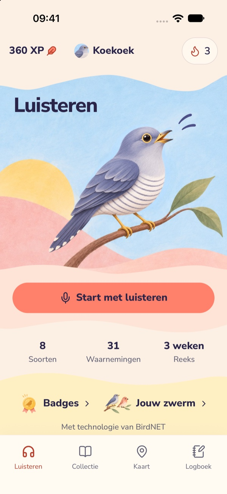
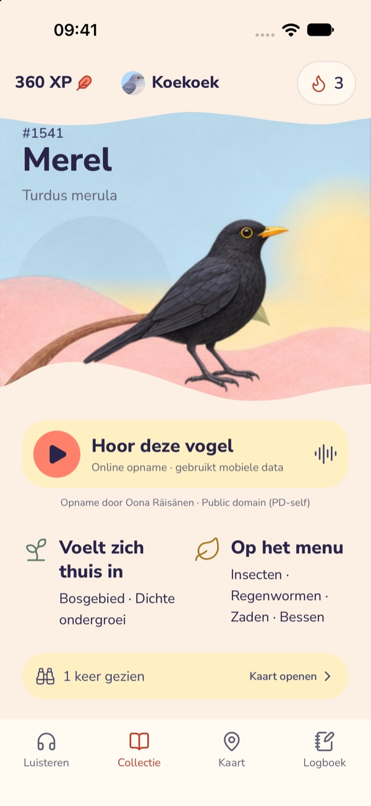

Koffie op?
Jas aan.
Ik ben Professor Koekoek. Ik help je vogels herkennen aan hun zang. Loop je een blokje mee?


Vogelgeluiden herkennen
Wie zit daar te fluiten?
Je hoort hem wel, maar ziet hem niet. Laat Koekoek even meeluisteren. Bekijk de voorgestelde vogels en sla je waarneming op.
Jouw collectie
Die ken ik.
Sla je waarnemingen op en zie je collectie groeien. Ontdekte vogels krijgen hun eigen illustratie. De silhouetten laten zien welke soorten je nog kunt vinden.


Vogeldetails
Leer de vogel kennen.
Lees over zijn leefgebied en voedsel, beluister zijn roep en bekijk waar hij voorkomt. Elke soort heeft een eigen pagina met illustraties en informatie.
Je kaart & logboek
Waar zat die merel ook alweer?
Bekijk op de kaart je eigen waarnemingen en vogels die in de buurt zijn gespot. Bewaar foto’s en notities in je logboek.

Vogelhuizen
Neem je zwerm mee.
Maak een vogelhuis voor jou en maximaal vijf anderen. Werk samen aan weekuitdagingen en richt jullie huisje in. Voor wie er een wedstrijdje van wil maken, is er ook een weekcompetitie.

Hulp nodig?
Op de hulppagina vind je praktische uitleg. Staat je vraag er niet bij? Mail ons gerust.
Bekijk de hulp